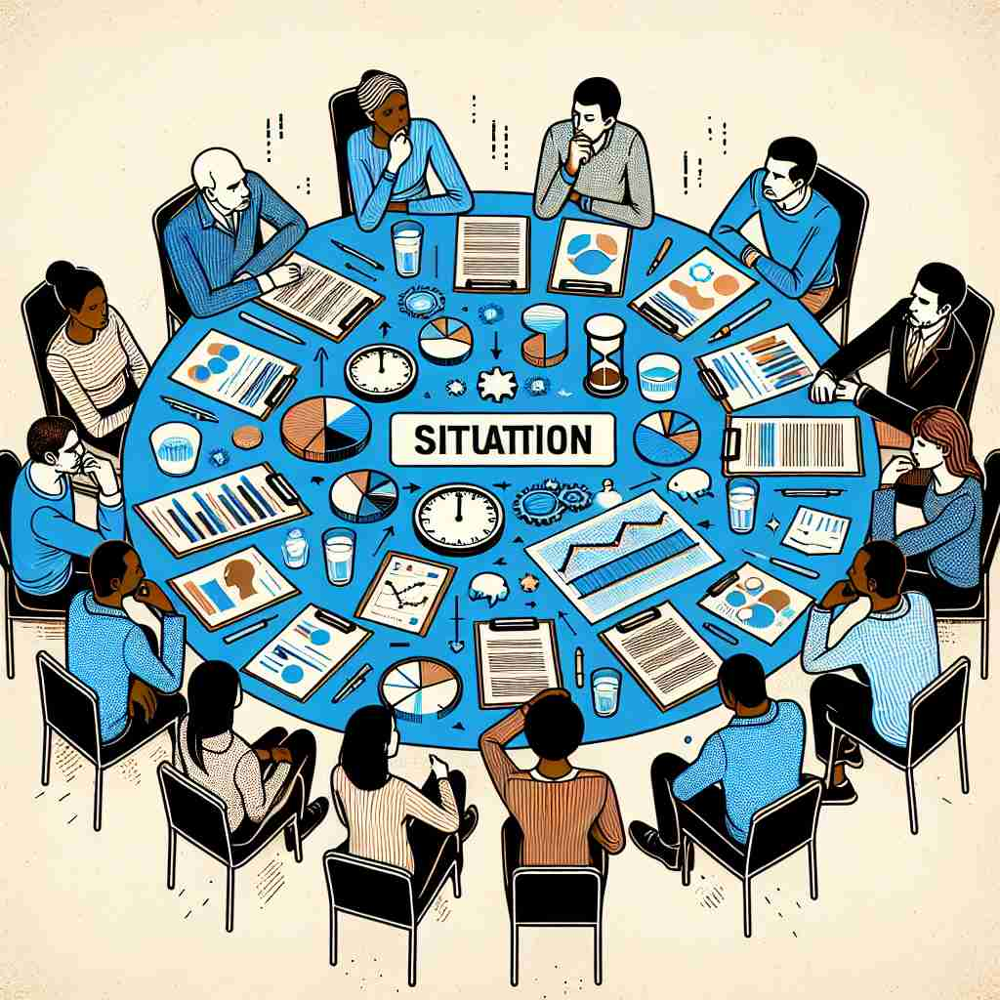

💬 The firefighters are ready to handle the emergency situation. 消防员已准备好应对紧急情况。

💬 The team discussed the stressful work situation during their meeting. 团队在会议中讨论了紧张的工作情况。
💬 The teacher explained the classroom situation to the students. 老师向学生们讲解了教室的情况。

💬 The team needs to understand the current situation before making decisions. 团队在做出决定之前需要了解当前情况。
🧠 想象'situation'是一个舞台，上面呈现着特定时间和地点的各种情况。这个舞台可能展示一般环境、具体问题、个人状态或物体位置。通过这个'情况舞台'的概念，你可以轻松联想并记住'situation'的各种用法。
🔈 [sɪtjʊ'eɪʃ(ə)n]
🗝️ n. a set of circumstances or conditions at a particular time and place 在特定时间和地点的一组情况或条件
🎭 在一个热闹的咖啡馆中，一位记者正坐在角落里观望，周围的顾客在享受着悠闲的下午茶。他观察笔记本上的细节，记录着此时此刻的氛围和顾客的对话，感受这个特定时刻下的整体 'situation'。
💬 The economic situation in the country is improving. 该国的经济形势正在改善。
🌳 由基础词根 "situ"（站立、放置）加上名词后缀 "-ation" 组成，表示某种处境或情形。
🕸️ 1. situate: 安置 2. site: 地点 3. position: 位置
💡 可以将 "situation" 想象为 "site"（地点）上的具体位置或情形，这样可以帮助记忆其表示环境、状态的意思。